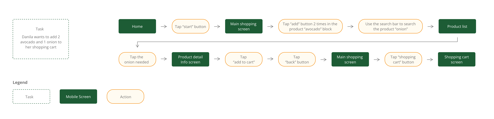

<div id="portfolio-page" class="portfolio-page-content">
    <div class="portfolio-page-wrapper">
        <div class="portfolio-page-nav">
            <div class="nav-item portfolio-page-prev-next">
                <a class="ajax-page-load" href="portfolio-project-3.html"><i class="lnr lnr-chevron-left"></i></a>
                <a class="ajax-page-load" href="portfolio-project-5.html"><i class="lnr lnr-chevron-right"></i></a>
            </div>
            <div class="nav-item portfolio-page-close-button">
                <a id="portfolio-page-close-button" href="#"><i class="lnr lnr-cross"></i></a>
            </div>
        </div>

        <div class="portfolio-page-title">
            <div>
                <h1>Freshly</h1>
                <h5>An End-to-end Mobile App for Local Grocery Store</h5>
            </div>
        </div>
        <div class="hero">
            
        </div>

        <div class="project-overview">
            <div class="project-overview-row">
                <h2>Project Overview</h2>
            </div>
            <div class="project-overview-row">
                <div>
                    <h3>Challenge</h3>
                    <p>The grocery delivery industry has undergone a significant transformation in response to the pandemic, with online grocery shopping emerging as a dominant trend. Our client, the owner of a local grocery store, sought to remain competitive by creating a mobile app that offers customers a comprehensive online shopping experience. This project aimed to develop a finished product aligned with the client's specific requirements.</p>
                </div>
                <div>
                    <h3>Objective</h3>
                    <p>Our goal was to deliver a mobile app that seamlessly catered to the client's needs in the evolving grocery market.</p>
                </div>
                <div>
                    <h3>My Role</h3>
                    <p>In this project, I assumed the primary responsibility for the UI design, collaborating closely with another designer on our team. My focus was on crafting the user interface for browsing products and the shopping process, while my colleague took charge of designing the payment and profile management components.</p>
                </div>
            </div>
        </div>

        <div class="design-process">
            <div class="design-process-row">
                <h2>Design Process</h2>
            </div>
            <div class="design-process-row">
                <div>
                    <p>While the project focused on building a common grocery app, we recognized the importance of research to understand user behaviors and preferences. We engaged in several meetings with the client to gain clarity on their requirements before diving into the design phase.</p>
                </div>
                <div>
                    <h3>Task Flow</h3>
                    <p>To enhance user navigation and streamline the shopping experience, we created a task flow centered around the shopping feature. This allowed us to identify key steps, anticipate user interactions, and refine the user experience.</p>
                    
                </div>
                <div>
                    <h3>User flow</h3>
                    <p>Building on the task flow, we mapped user flows. This process helps me walk in an individual user's shoes, and think through different decision point that this user might encounter.</p>
                    
                </div>
                <div>
                    <h3>Mid-Fidelity Wireframes</h3>
                    <p>After creating a UI Requirement Document with a to-do list for designing the key screens identified in the task flow and user flow, I started to create mid-fidelity wireframes. This enables me to examine my ideas before putting everything in the digitizing process. Iterations were made based on these wireframes, incorporating feedback and insights.</p>
                    
                </div>
                <div>
                    <h3>Style Tile</h3>
                    <p>We developed the visual style which serves as a guide for UI design later, incorporating logo design, color palette, and typography. Green serves as the main tone in this design. It's a very stable color that conveys the idea of freshness and health to users.</p>
                    
                </div>
                <div>
                    <h3>High-Fidelity Wireframes</h3>
                    <p>Transitioning from mid-fidelity to high-fidelity wireframes allowed us to refine the aesthetics and achieve visual balance. We addressed any design challenges that arose during this phase.</p>
                </div>
            </div>
            <div class="design-process-full-width">
                <div class="high-fi-wireframe">
                    
                </div>
            </div>
        </div>

        <div class="next-step">
            <div class="next-step-row">
                <h2>Next step</h2>
            </div>
            <div class="next-step-row">
                <p>Our immediate next steps involve assembling our design into a prototype and conducting usability tests. Through these tests, we aim to gather user feedback and insights, which will inform refinements to the design. Following this, the project will advance to the development phase.</p>
            </div>
        </div>


<!--            <div class="col-sm-4 col-md-4 portfolio-block">-->
<!--                &lt;!&ndash; Project Description &ndash;&gt;-->
<!--                <div class="project-description">-->
<!--                    <div class="block-title">-->
<!--                        <h3>Description</h3>-->
<!--                    </div>-->
<!--                    <ul class="project-general-info">-->
<!--                        <li><p><i class="lnr lnr-user"></i> Alex Smith</p></li>-->
<!--                        <li><p><i class="lnr lnr-link"></i> <a href="#" target="_blank">www.project-site.com</a></p></li>-->
<!--                        <li><p><i class="lnr lnr-calendar-full"></i> 25 april, 2021</p></li>-->
<!--                    </ul>-->

<!--                    <p class="text-justify">Aliquam euismod aliquam massa, quis eleifend dui sodales vitae. Interdum et malesuada fames ac ante ipsum primis in faucibus.</p>-->
<!--                    &lt;!&ndash; /Project Description &ndash;&gt;-->

<!--                    &lt;!&ndash; Technology &ndash;&gt;-->
<!--                    <div class="tags-block">-->
<!--                        <div class="block-title">-->
<!--                            <h3>Technology</h3>-->
<!--                        </div>-->
<!--                        <ul class="tags">-->
<!--                            <li><a>HTML5</a></li>-->
<!--                            <li><a>CSS3</a></li>-->
<!--                            <li><a>jQuery</a></li>-->
<!--                            <li><a>Ajax</a></li>-->
<!--                            <li><a>PHP5</a></li>-->
<!--                        </ul>-->
<!--                    </div>-->
<!--                    &lt;!&ndash; /Technology &ndash;&gt;-->

<!--                    &lt;!&ndash; Share Buttons &ndash;&gt;-->
<!--                    <div class="share-buttons">-->
<!--                        <div class="block-title">-->
<!--                            <h3>Share</h3>-->
<!--                        </div>-->
<!--                        <div class="share-buttons-block">-->
<!--                            <a href="#" target="_blank" class="btn"><i class="fab fa-facebook-f"></i> </a>-->
<!--                            <a href="#" target="_blank" class="btn"><i class="fab fa-twitter"></i> </a>-->
<!--                            <a href="#" target="_blank" class="btn"><i class="fab fa-dribbble"></i> </a>-->
<!--                        </div>-->
<!--                    </div>-->
<!--                    &lt;!&ndash; /Share Buttons &ndash;&gt;-->
<!--                </div>-->
<!--                &lt;!&ndash; Project Description &ndash;&gt;-->
<!--            </div>-->

        <div class="project-page-footer">
            <p>© 2022 Yumao Chen</p>
        </div>
    </div>
</div>
